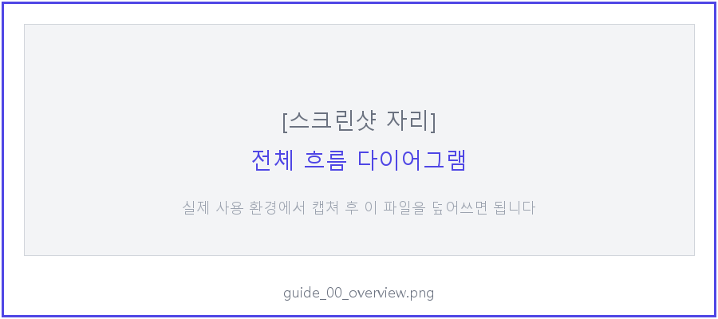
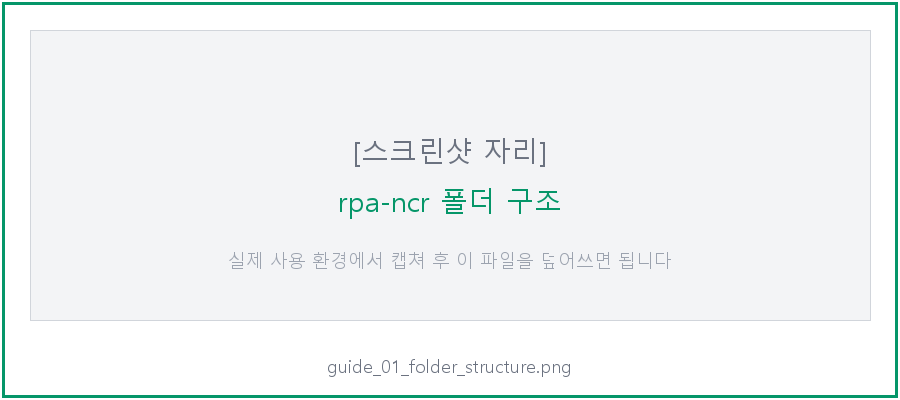
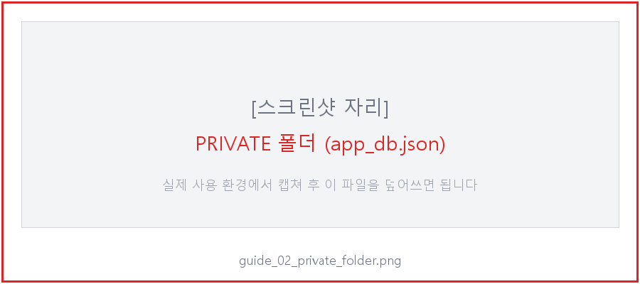
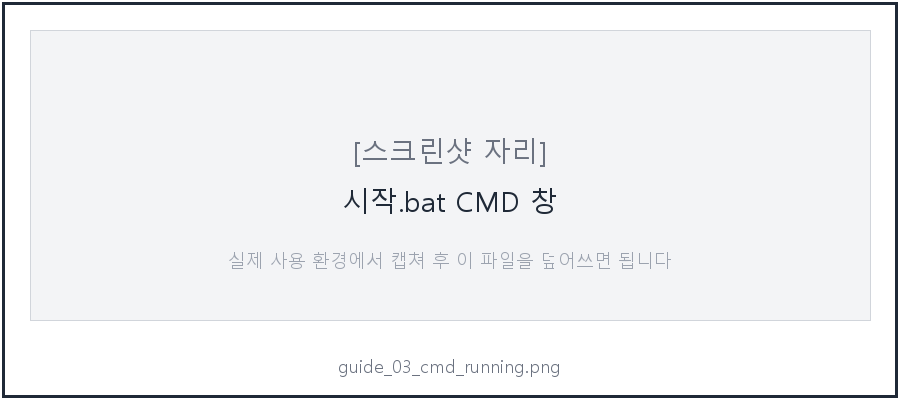
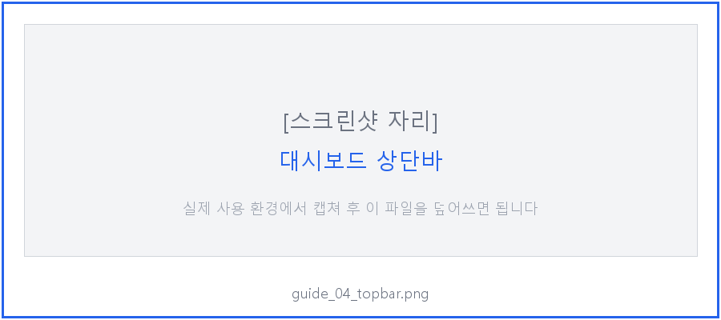
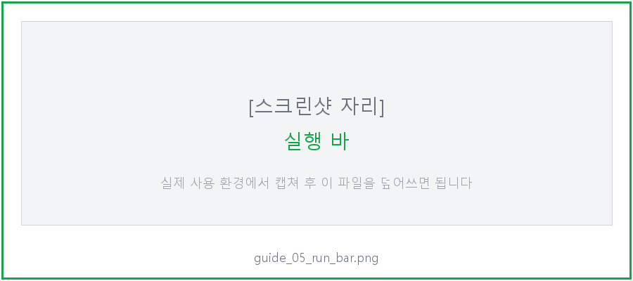
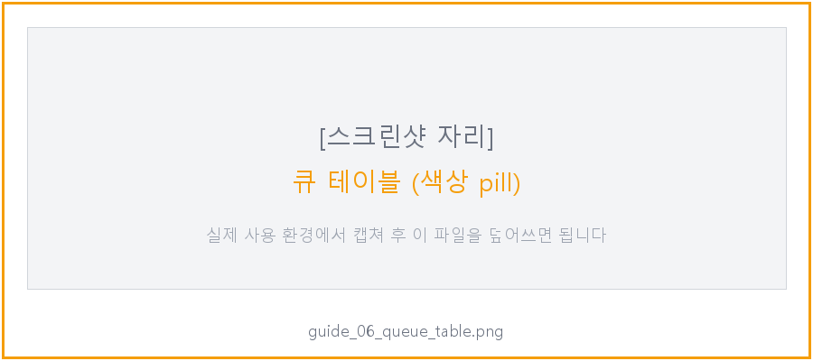
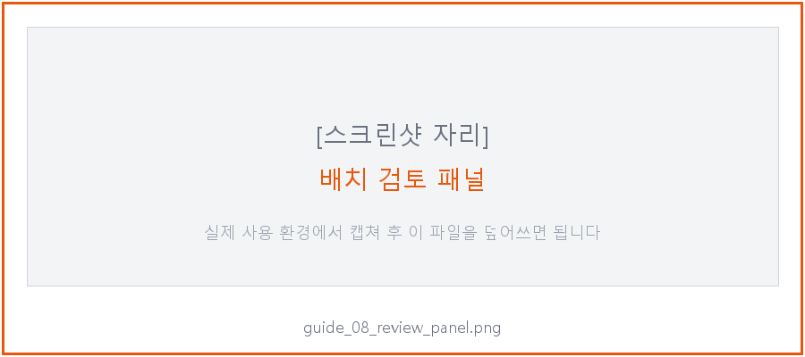
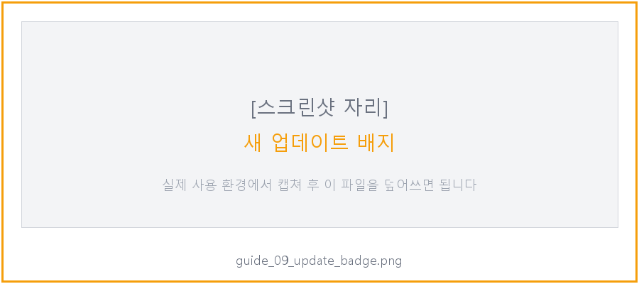
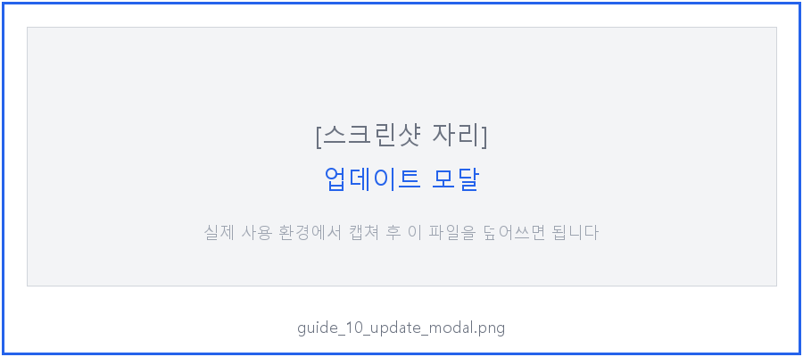

웹페이지에 등록된 부적합 보고(NCR) 를 부적합판정등록(S) UNIERP 메뉴에 자동으로 입력 합니다. 사람은 [입력 시작] 버튼만 누르면 되고, RPA 가 Tab 키를 눌러가며 25개 필드를 전부 채워넣고 저장까지 합니다. 입력 끝나면 사람이 결과를 눈으로 한 번 확인하고 [완료 확인] 만 눌러주면 끝.

해야 할 것:
- 윈도우 키 → cmd → Enter
- 검정 창에서 python --version 입력 → Enter
정상 결과: Python 3.11.x 또는 Python 3.12.x 가 나오면 OK.
없거나 오류: python.org 에서 다운로드 → 설치 중 "Add Python to PATH" 체크박스 반드시 체크.
Python 3.13 은 사용 금지 — 일부 패키지(Jinja2 등) 호환 문제. 3.11 또는 3.12 설치할 것.
브라우저에서 아래 주소 접속:
https://github.com/Zel-da/Code-Transformer/archive/refs/heads/main.zip
Code-Transformer-main.zip 이 다운로드 됩니다. 압축을 풀면 안에 여러 폴더가 있는데, 그 중 rpa-ncr/ 폴더만 필요합니다.
해야 할 것:
1. zip 압축 풀기
2. 안에 있는 rpa-ncr/ 폴더 통째로 복사해서 C:\Users\<내 계정>\Documents\ 아래로 이동
3. 결과: C:\Users\<내 계정>\Documents\rpa-ncr\ 에 시작.bat, main.py, src/, config/, docs/ 등이 보여야 함

이 파일은 DB 접속 정보가 들어있어서 깃에 올라가지 않습니다. IT 담당자(안예준)에게 USB 로 받아서 넣어야 합니다.
해야 할 것:
1. Documents\rpa-ncr\ 안에 PRIVATE 폴더 만들기 (대문자 주의)
2. 받은 app_db.json 파일을 PRIVATE 폴더 안에 복사
3. 최종 경로: Documents\rpa-ncr\PRIVATE\app_db.json

PRIVATE 폴더는 절대 외부에 공유하거나 깃에 올리면 안 됩니다. DB 비밀번호가 노출됩니다.
해야 할 것:
1. Documents\rpa-ncr\바탕화면에 바로가기 만들기.bat 더블클릭
2. 바탕화면에 NCR RPA 아이콘이 생김 → 이걸 더블클릭하면 다음부터는 시작.bat 안 찾아도 됨
RPA 가 UNIERP 창에 입력하려면 UNIERP 가 먼저 떠있어야 합니다.
해야 할 것: 1. UNIERP 바로가기를 "관리자 권한으로 실행" 우클릭 (중요) 2. 로그인 완료 3. 메뉴는 아무거나 열어둬도 되고 안 열어도 됨 — RPA 가 알아서 메뉴 열고 판정등록으로 들어감
왜 관리자 권한? UNIERP 가 관리자로 뜨면 RPA 도 관리자여야 창 조작 가능 (Windows 보안 정책). 아래 시작.bat 이 자동으로 관리자 승격 요청합니다.
바탕화면 NCR RPA 아이콘 또는 Documents\rpa-ncr\시작.bat 더블클릭.
정상 흐름:
1. UAC 창 뜨면 [예] 클릭 (관리자 승격)
2. 검정 CMD 창이 열리고 다음 메시지가 순서대로 뜸:
- [first run] initial update check... (첫 실행 때만)
- .venv 설치 (첫 실행 때 2~3분, 이후엔 즉시 패스)
- main.py 실행 → 브라우저가 자동으로 열림 (http://127.0.0.1:8010)

브라우저가 자동으로 열리고 대시보드 가 뜹니다. 먼저 상단바 를 봅시다:

가운데 chip 3개:
- 소스: DB (Neon) — 어느 데이터 소스에 연결됐는지 (DB 가 기본)
- ERP 미연결 → [ERP 창 확인] 눌러서 UNIERP 창 발견되면 ERP 연결됨 으로 바뀜
- 큐 비어있음 → [PENDING 조회] 누르면 큐 N/M 완료 로 바뀜
우측 버튼:
- 📥 새 업데이트 노란 깜빡이 배지 — 업데이트 있을 때만 뜸 (없으면 안 뜸)
- ⚙ 설정 — 소스/ERP 설정 drawer 를 열고 닫음 (평상시 안 봄)
본문 가장 위 실행 바 에서 [📥 PENDING 조회] 버튼 클릭.

정상 결과:
- 하단 큐 테이블 에 QC 승인 완료된 보고 목록이 뜸
- 상단 chip 이 큐 0/N 완료 로 바뀜
- 로그에 PENDING 보고 N건 조회됨 메시지
0건 나오면: QC 담당자가 아직 승인 안 한 상태. 웹에서 QC 승인 받은 보고만 이 큐에 뜸.

| 열 | 의미 |
|---|---|
# |
큐 안 순서 (1부터) |
ID |
DB 상의 보고 번호 |
NCR 번호 |
NCR-25-xxxx 같은 사람이 보는 번호 |
품목코드 |
CL411xxxx 같은 품목 코드 |
QC |
QC 승인 상태 (초록 "승인" 이어야 입력 대상) |
진행 |
현재 작업 상태 (아래 색상 참고) |
재시도 |
실패 재시도 횟수 (↻ N) — 평상시 "-" |
진행 열 색상: - 대기 회색 — 아직 입력 안 함 - 입력중 파랑 — RPA 가 지금 ERP 에 타이핑 중 - 저장됨 노랑 — ERP 저장 완료, 사용자 검토 대기 - 완료 초록 — [완료 확인] 눌러서 끝 - 실패 빨강 — 5회 재시도 모두 실패, 수동 조치 필요
해야 할 것: 실행 바에서 [🔍 ERP 창 확인] 클릭.
정상 결과:
- 상단 chip 이 ERP 연결됨 (초록) 으로 바뀜
- 로그: ✓ ERP 창 발견: UNIERP - SOOSAN CEBOTICS(Admin)
"ERP 미연결" 나오면: - UNIERP 가 안 떠있거나, 관리자 권한으로 안 떠있는 상태 - UNIERP 창 켜고 다시 [🔍 ERP 창 확인] 눌러보기
여기부터는 RPA 가 ERP 를 직접 조작 합니다. 조작 중에는 마우스/키보드 건드리지 말 것 (포커스가 이탈하면 중단됨).
해야 할 것: 1. UNIERP 창을 최상위로 올려놓음 (최소화 해제, 화면 가득 차게) 2. 대시보드에서 [▶ 입력 시작] 클릭
정상 흐름 (큐에 10건이 있다고 가정):
1. RPA 가 F3 눌러서 메뉴 검색창 열기
2. 부적합판정등록(S)(QD231MA1_CKO063) 복붙 + Enter
3. 판정등록 폼 뜨면 Tab 10번 누르고 발행팀 입력
4. 그 다음 Tab 치며 25개 필드 순서대로 입력
5. Ctrl+S 로 저장 → Shift+Insert 로 새 폼 열기
6. 다음 보고 반복 (총 10회)
7. 전부 끝나면 하단에 배치 검토 패널 이 노란색으로 열림
로그에 뜨는 메시지:
- [부적합판정등록] 입력 중: 보고 #123
- ✓ #123 [부적합판정등록] 입력+저장 완료
- 마지막에: ⏸ 전체 10건 입력 완료. 검토 패널에서 페이지별로 확인 후 [완료 확인]
전체 입력이 끝나면 자동으로 배치 검토 패널 (노란 테두리) 이 열립니다.

사용법: 1. UNIERP 창 을 보면서 입력된 값이 맞는지 확인 2. 틀린 필드가 있으면: 그 필드 옆에 있는 [재실행 #N] 버튼 (UNIERP 에서 해당 필드 클릭한 뒤 대시보드 버튼 누르면 그 자리에 다시 타이핑) 3. 완전히 처음부터 다시 하고 싶으면: [처음부터] 버튼 (UNIERP 폼이 새로 열리고 25필드 전부 재입력) 4. 이 보고 OK 면: [이 보고 완료] → 자동으로 다음 보고로 넘어감 5. 전부 OK 면: [모두 확인] → 10건 전부 한꺼번에 완료 처리
좌우 넘기기: 아래 ◀ 이전 / 다음 ▶ 버튼으로 보고 간 이동.
[완료 확인] 을 누른 보고는:
- Neon DB 의 sync_status = COMPLETED
- qc_status = ERP_SYNCED (웹 ledger/manage 에서 "ERP 등록 완료" 뱃지로 보임)
- 다음 [PENDING 조회] 하면 이 보고는 더 이상 뜨지 않음
확인: Replit 웹 (http://code-transformer.<...>.replit.app/manage) 에서 그 보고 찾아보면 상태가 바뀌어 있어야 함.

해야 할 것:
1. 배지 클릭 → 업데이트 모달 열림
2. 현재 버전과 원격 버전 SHA + 커밋 메시지 표시됨
3. [지금 업데이트] 클릭
4. 완료되면 "✓ 업데이트 완료 — 프로그램을 재시작하세요" 메시지
5. 브라우저 창 닫고 → CMD 창 닫고 → 바탕화면 NCR RPA 다시 더블클릭

노란 배지는 새 버전이 있을 때만 뜹니다. 안 보이면 최신입니다. 수동 확인하려면:
- 상단 ⚙ 설정 열기 → 하단 설정 패널에서 "업데이트 다시 확인" (해당 버튼이 없으면 CMD 창에서 python update.py --check)
backup_before_<SHA>/ 폴더에 자동 백업 → 자동 복원 됨 → 원래 버전으로 계속 사용 가능logs/ 안 최신 .log 파일) 전달원인: UNIERP 가 안 떠있거나, 관리자 권한 차이
해결: 1. UNIERP 를 관리자 권한 으로 다시 시작 (우클릭 → 관리자로 실행) 2. 로그인 3. 대시보드 [🔍 ERP 창 확인] 다시 클릭
원인: UNIERP 폼 레이아웃이 변경되거나 disabled 된 필드가 바뀜
해결: IT 담당자에게 문의. config/forms/_defaults/부적합판정등록.json 수정 필요.
원인: 입력 중 다른 창 클릭하거나 알림창이 뜸
해결:
1. UNIERP 창 최상위 유지
2. 대시보드 [▶ 입력 시작] 재클릭 → 중단된 보고는 PENDING 복원됐으므로 재조회 하면 다시 뜸
원인: claim_status / corrective_action_status DB 값이 "예"/"Y"/"true" 외의 형태
해결: 웹 QC 페이지에서 해당 보고의 값을 확인 → "예" 또는 "아니오" 로 정확히 저장되도록 QC 담당자에게 요청
원인:
- 모든 보고가 QC 승인 안 됨 (qc_status != APPROVED)
- 최근에 실패해서 재시도 대기 중 (sync_next_retry_at 이 미래)
해결: QC 담당자가 승인 완료했는지 확인. 그래도 안 뜨면 큐 테이블의 재시도 열(↻ N) 확인 → 숫자 있으면 백오프 중 (최대 60분 대기).
5회까지 자동 재시도 (지수 백오프 2분 → 4 → 8 → 16 → 32분). 5회 지나면 FAILED 로 확정되고 더 이상 재시도 안 됨. IT 담당자가 Replit 웹에서 수동으로 상태 복원 가능.
원인: 시작.bat 의 유니코드 특수문자(→, —) 가 코드페이지와 안 맞음
해결: GitHub 에서 최신 시작.bat 하나 다운로드해 교체:
https://github.com/Zel-da/Code-Transformer/raw/main/rpa-ncr/시작.bat
Code-Transformer-main.zip 다운로드rpa-ncr/ 폴더만 Documents\ 아래로 이동PRIVATE/app_db.json 받아서 PRIVATE/ 안에 넣기바탕화면에 바로가기 만들기.bat 더블클릭 → 바탕화면 아이콘 생성소스: DB + ERP 연결됨| 상황 | 연락 |
|---|---|
| 프로그램 오류, 설치 문제 | IT 담당자 (안예준) — yj.an1@soosan.co.kr |
| QC 승인 안 됨, 보고 내용 문제 | QC 담당자 |
| UNIERP 자체 오류 | ERP 운영팀 |
로그는 Documents\rpa-ncr\logs\ 안 최신 .log 파일 — 메일 첨부해서 보내면 분석 가능.